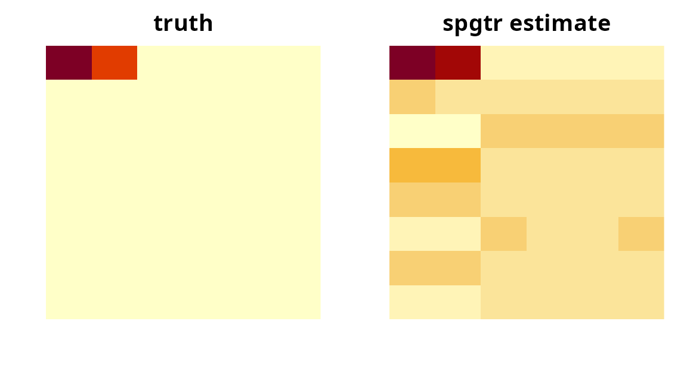

library(tensory)
#>
#> Attaching package: 'tensory'
#> The following object is masked from 'package:stats':
#>
#> reshape
#> The following object is masked from 'package:utils':
#>
#> find
#> The following object is masked from 'package:methods':
#>
#> kronecker
#> The following objects are masked from 'package:base':
#>
#> %*%, kronecker, scaleThe problem this solves
Suppose every subject in your study contributes a whole array of numbers rather than a handful of variables:
- an image, or a slice of one;
- a brain connectivity matrix (region by region);
- a spectrogram, or any sensor-by-time grid;
- a spatial grid measured at several time points.
and each subject also has one outcome: a diagnosis (yes/no), a count, a score. You want to know how the array relates to the outcome, and which parts of the array matter.
You cannot simply flatten the array and run glm(). A
modest 60 × 60 image is 3,600 predictors; with 300 subjects, ordinary
logistic regression has no unique solution and any answer it produces is
noise. Flattening also throws away the grid structure: it forgets that
column 12 of row 4 sits next to column 13 of row 4.
spgtr() keeps the structure. It compresses each
dimension of the array separately down to a few informative
directions, fits a generalized linear model on the compressed version,
and then translates the fitted model back to the original array shape so
you can look at it. Adding a sparsity penalty makes it also
select: whole rows, columns, or slices that carry no signal are
dropped, and you are told which ones survived.
Data layout
Two input shapes are accepted, whichever is more convenient:
-
A list,
X[[i]]being subjecti’s matrix or array. All subjects must share the same shape. -
One big array of order
m + 1, with subjects in the last dimension, e.g.dim(X) == c(8, 6, 120)for 120 subjects measured on an 8 × 6 grid.
The outcome y is a plain vector with one entry per
subject: 0/1, TRUE/ FALSE, or a
two-level factor for yes/no outcomes; counts for poisson();
any numbers for gaussian().
Let us simulate 200 subjects measured on an 8 × 6 grid where only the top-left corner drives a yes/no outcome.
set.seed(1)
n <- 200
p <- c(8, 6)
B_true <- matrix(0, p[1], p[2])
B_true[1, 1:2] <- c(2, 1.5) # only two cells carry signal
X <- lapply(seq_len(n), function(i) matrix(rnorm(prod(p)), p[1], p[2]))
eta <- vapply(X, function(xi) sum(B_true * xi), numeric(1))
y <- rbinom(n, 1, 1 / (1 + exp(-eta)))
length(X)
#> [1] 200
dim(X[[1]])
#> [1] 8 6
table(y)
#> y
#> 0 1
#> 96 104Quick start
One call fits the model. u is the number of directions
kept per dimension; leave it out and it is chosen for you.
fit <- spgtr(X, y, u = c(1, 1))
fit
#> <spgtr: sparse penalized generalized tensor regression>
#> Outcome: binomial with logit link
#> Subjects: 200
#> Array shape: 8 x 6
#> Directions (u): 1 1
#> Basis: envelope (lambda = 0)
#> Slices kept: 8/8 6/6
#> Deviance: 183.575summary() adds a plain report of what was kept and how
well the model fits.
summary(fit)
#> <spgtr: sparse penalized generalized tensor regression>
#> Outcome: binomial with logit link
#> Subjects: 200
#> Array shape: 8 x 6
#> Directions (u): 1 1
#> Basis: envelope (lambda = 0)
#> Slices kept: 8/8 6/6
#> Deviance: 183.575
#>
#> Slices used, by dimension:
#> dim 1 (8): all
#> dim 2 (6): all
#>
#> Deviance explained: 33.7% (in-sample)
#> Coefficient array norm: 1.972
#> Accuracy: 0.765 AUC: 0.859 (in-sample)The estimated coefficient array has exactly the shape of one subject’s data. Large entries are the cells that push the outcome up or down.
B_hat <- as.tensor(coef(fit))$as_array()
round(B_hat, 2)
#> [,1] [,2] [,3] [,4] [,5] [,6]
#> [1,] 1.32 1.17 -0.23 -0.17 -0.13 -0.21
#> [2,] 0.03 0.03 -0.01 0.00 0.00 -0.01
#> [3,] -0.39 -0.35 0.07 0.05 0.04 0.06
#> [4,] 0.30 0.26 -0.05 -0.04 -0.03 -0.05
#> [5,] 0.15 0.14 -0.03 -0.02 -0.02 -0.02
#> [6,] -0.23 -0.20 0.04 0.03 0.02 0.04
#> [7,] 0.08 0.07 -0.01 -0.01 -0.01 -0.01
#> [8,] -0.14 -0.12 0.02 0.02 0.01 0.02
op <- par(mfrow = c(1, 2), mar = c(2, 2, 2, 1))
image(t(B_true[nrow(B_true):1, ]), main = "truth", axes = FALSE)
image(t(B_hat[nrow(B_hat):1, ]), main = "spgtr estimate", axes = FALSE)
par(op)Predictions come in three flavours.
head(predict(fit, type = "response")) # probabilities
#> [1] 0.69443758 0.32718356 0.07418792 0.10086653 0.30842322 0.83967336
head(predict(fit, type = "class")) # 0/1 labels
#> [1] 1 0 0 0 0 1
head(predict(fit, type = "link")) # log-odds
#> [1] 0.8209482 -0.7209512 -2.5240700 -2.1876333 -0.8075013 1.6557998New subjects go in exactly like the training data:
Choosing how much to compress
u[k] is how many directions are kept in dimension
k. Small values mean a simpler, more stable model; larger
values mean more flexibility and more parameters (the model has
prod(u) coefficients after compression, so
u = c(2, 2) costs four).
Omit u and an eigenvalue-ratio rule picks it:
auto <- spgtr(X, y)
auto$u
#> [1] 1 1If you would rather choose by predictive performance, fit a few and compare on held-out subjects:
Selecting which parts of the array matter
Setting lambda > 0 adds a penalty that removes entire
rows and columns of the array. fit$selected lists what
survived in each dimension.
sparse <- spgtr(X, y, u = c(1, 1), lambda = 4)
sparse$nonzero # kept per dimension, out of 8 and 6
#> [1] 1 1
sparse$selected
#> [[1]]
#> [1] 1
#>
#> [[2]]
#> [1] 1Rather than guessing lambda, let cross-validation choose
it. spgtr_cv() fits the whole path in every fold, scores
each value by held-out deviance, and refits at the winner.
set.seed(2)
cvfit <- spgtr_cv(X, y, u = c(1, 1), nfolds = 5, nlambda = 12)
cvfit$lambda_min
#> [1] 0.05522515
head(cvfit$cv)
#> lambda deviance
#> 1 0.001275773 42.28004
#> 2 0.001939061 41.97822
#> 3 0.002947200 41.68458
#> 4 0.004479482 41.44865
#> 5 0.006808415 41.40233
#> 6 0.010348186 41.07678
cvfit$selected
#> [[1]]
#> [1] 1
#>
#> [[2]]
#> [1] 1 2
plot(cvfit$cv$lambda, cvfit$cv$deviance, type = "b", log = "x",
xlab = "lambda (sparsity)", ylab = "cross-validated deviance")
abline(v = cvfit$lambda_min, lty = 2)The selected model uses only a few rows and columns, which is the interpretable output most applications want: these regions of the array, and no others, carry the signal.
round(as.tensor(coef(cvfit))$as_array(), 2)
#> [,1] [,2] [,3] [,4] [,5] [,6]
#> [1,] 1.97 1.63 0 0 0 0
#> [2,] 0.00 0.00 0 0 0 0
#> [3,] 0.00 0.00 0 0 0 0
#> [4,] 0.00 0.00 0 0 0 0
#> [5,] 0.00 0.00 0 0 0 0
#> [6,] 0.00 0.00 0 0 0 0
#> [7,] 0.00 0.00 0 0 0 0
#> [8,] 0.00 0.00 0 0 0 0A caution: lambda selects whole slices,
not individual cells. If row 3 is kept, every cell in row 3 can be
non-zero. That is the right notion when rows and columns are meaningful
units (brain regions, sensors, time points).
Ordinary covariates
Age, sex, batch, and similar variables belong in Z. They
enter the model linearly, are never compressed, and are never
penalized.
Z <- cbind(age = rnorm(n), male = rbinom(n, 1, 0.5))
fit_z <- spgtr(X, y, u = c(1, 1), Z = Z)
fit_z$gamma # one coefficient per column of Z
#> [1] -0.1344264 0.1116741When a fit uses Z, prediction needs it too:
Outcomes other than yes/no
Pass any GLM family.
counts <- rpois(n, exp(1 + eta / 3))
fit_pois <- spgtr(X, counts, u = c(1, 1), family = poisson())
head(predict(fit_pois, type = "response"))
#> [1] 2.4679801 1.7676270 1.0179056 0.8112382 2.0097816 4.5968332
scores <- eta + rnorm(n, sd = 0.5)
fit_gauss <- spgtr(X, scores, u = c(1, 1), family = gaussian())
cor(predict(fit_gauss), scores)
#> [1] 0.9290174For a continuous outcome with no sparsity you can also use
tepls(), the classical tensor envelope PLS estimator;
spgtr(..., family = gaussian(), basis = "simpls")
reproduces it exactly.
Honest evaluation
Everything summary() prints is in-sample and therefore
optimistic. Split the subjects, or read the cross-validated deviance
from spgtr_cv().
set.seed(3)
idx <- sample(n, 150)
f <- spgtr_cv(X[idx], y[idx], u = c(1, 1), nfolds = 5, nlambda = 8)
prob <- predict(f, X[-idx], type = "response")
yy <- y[-idx]
mean((prob > 0.5) == (yy == 1)) # accuracy
#> [1] 0.72
n1 <- sum(yy == 1); n0 <- sum(yy == 0)
(sum(rank(prob)[yy == 1]) - n1 * (n1 + 1) / 2) / (n1 * n0) # AUC
#> [1] 0.7864583What the algorithm does
For readers who want the mechanics. Write X_i for
subject i’s array of shape p_1 x ... x p_m,
and Z for the ordinary covariates.
-
Outcome enters through a working residual. Fit the
GLM of
yonZalone (the intercept only whenZisNULL) and taker_i = y_i - mu_0i. This is what makes the method work for any family: the rest of the algorithm only ever seesr. -
Second moments. Center the predictors and form the
mode-
kmarginal covarianceSigma_k(averaging over all other dimensions and subjects) and the cross-covariance arrayCbetween the centered predictor andr. The mode-ksignal matrix isU_k = C_(k) (kron_{j != k} Sigma_j^{-1}) C_(k)'. -
Directions per dimension.
W_k(sizep_k x u_k) is estimated from the pair(U_k, Sigma_k). Withbasis = "simpls"it is the SIMPLS deflation of Zhang & Li (2017), a closed-form eigenvector recursion. Withbasis = "envelope"that basis is refined by minimizing the envelope objectivelog|W' Sigma_k W| + log|W' (Sigma_k + U_k)^{-1} W|over semi-orthogonalW. -
Sparsity.
lambda > 0addslambda * sum_i w_ki ||W_k[i, ]||_2, an adaptively weighted group penalty on the rows ofW_k. A zero row means sliceiof dimensionkcannot enter the model at all. The problem is solved by a proximal gradient method on the Stiefel manifold whose retraction is a right-multiplication, which is exactly what lets zeroed rows survive re-orthonormalization. -
Fit and translate back. Reduce each subject to
scores
T_i = X_i x_1 W_1' ... x_m W_m', fit the GLM ofyon(Z, vec(T)), and map the latent coefficientsDback withB = D x_1 W_1 ... x_m W_m. The returnedcoef(fit)is thatB, stored as aTTensor(coreD, factorsW) so the structure is preserved;as.tensor()expands it.
References: Zhang & Li (2017, Technometrics) for the tensor PLS estimator, Cook & Zhang (2016, JCGS) for envelope estimation, and Xiao, Liu & Yuan (2021, SIAM J. Optim.) for the manifold proximal gradient solver.
Performance notes
The two expensive steps – the mode-wise covariances and the manifold
solver – are compiled kernels calling BLAS/LAPACK directly, and the
score computation reuses the package’s compiled ttm().
Reference implementations in R are used automatically if the package was
built without compilation; the two paths agree to numerical tolerance
and are checked against each other in the test suite.
Practical guidance:
- A single
spgtr()fit on a 60 × 60 predictor with 300 subjects takes about a tenth of a second; the fullspgtr_cv()path (20 penalties, 5 folds) takes a second or two. - Cost grows linearly in the number of subjects and in the total array
size, and cubically in each individual dimension
p_k(from the eigen problems), so a 200 × 200 dimension is far more expensive than four dimensions of 50. -
basis = "simpls"skips all iteration and is the fastest option when you do not need sparsity. -
spgtr_cv()computes covariances once per fold and warm-starts each penalty from the previous one, so a 20-point path costs far less than 20 separate fits.
Limitations
- Sparsity is by slice, not by cell.
- All subjects must share one array shape; missing cells are not supported.
- In-sample statistics are optimistic; use held-out data.
- Standard errors and p-values are not provided. The model is selected from the data, so naive intervals would be wrong; use resampling if you need uncertainty.
- With a binary outcome and very strong signal the score-level GLM can
separate perfectly, in which case
glm.fit()warns and the coefficients grow. Reduceuor increaselambdaif that happens.